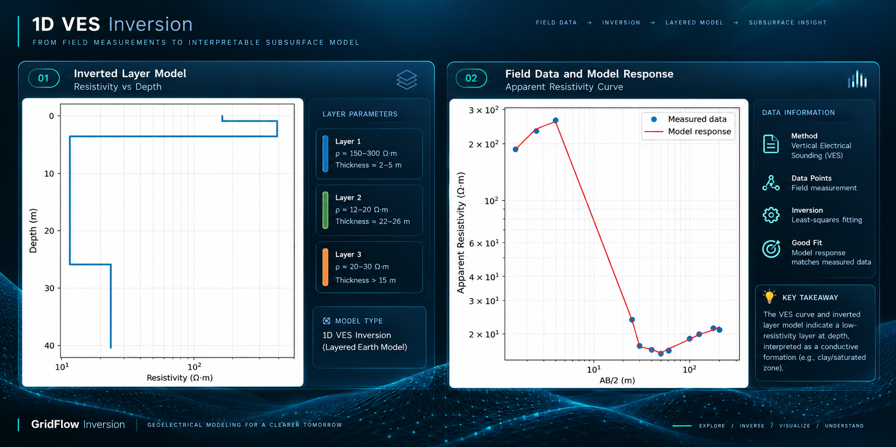
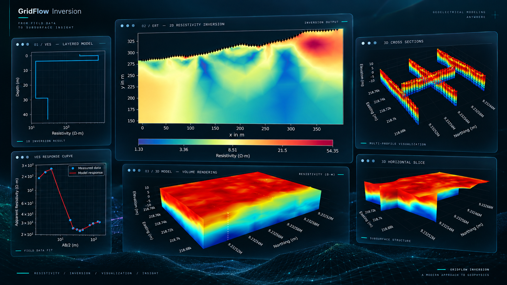
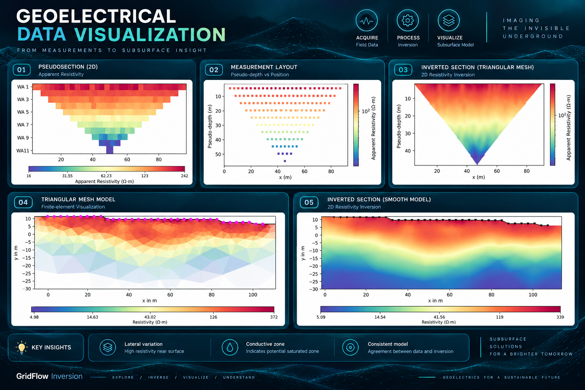
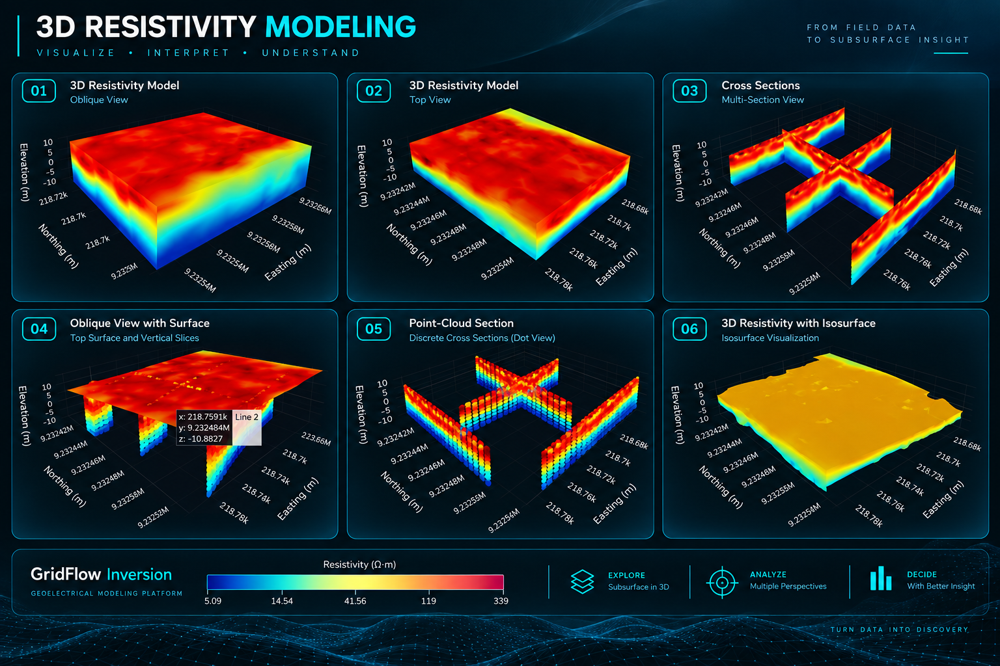

01 / VES01
1D VES
Inversion
Transform Vertical Electrical Sounding observations into interpretable layered resistivity models using blocky and smooth inversion workflows.
A browser-based platform for 1D VES inversion, 2D ERT inversion, and 3D resistivity modeling — bringing practical geoelectrical workflows into one interface.

GridFlow Inversion brings geoelectrical workflows into a browser-oriented environment. The application provides dedicated workflows for Vertical Electrical Sounding, 2D resistivity profiles, and interactive 3D resistivity modeling.
Use these visual panels as placeholders for your actual GridFlow screenshots. Each image can be replaced later without changing the page structure.

01 / VESTransform Vertical Electrical Sounding observations into interpretable layered resistivity models using blocky and smooth inversion workflows.

02 / ERTMove from multi-electrode resistivity measurements and compatible input data to an interpretable 2D subsurface resistivity section.

03 / 3DConstruct interactive spatial resistivity models from scattered observations or multiple 2D inversion lines using several interpolation approaches.
The current application uses Streamlit for the web interface, Python scientific libraries for computation, pyGIMLi for geoelectrical inversion, SciPy for interpolation, and Plotly for interactive visualization.
View architecture →The landing page remains independent from the computational application. Its role is discovery, explanation, visual proof, and navigation to the live app.
Open the live GridFlow Inversion application in your browser.
Launch GridFlow Inversion ↗